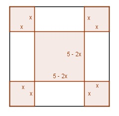

Aufgabe 131 Die rote Fläche in dem Quadrat hat eine Größe von 14,92 cm2. Wie groß ist x?

4x2 + (5 - 2x)2 = 14,92 4x2 + 25 - 10x - 10x + 4x2 = 14,92 8x2 - 20x + 25 = 14,92 |-14,92 8x2 - 20x + 10,08 = 0 A, B, C - Formel A = 8 ; B = -20 ; C = 10,08 x1,2 = x1,2 = 50 ± x1,2 = 50 ± 20 ± 8,8 x1,2 = ---------- 16 20 + 8,8 28,8 x1 = ----------- = ------ = 1,8 cm oder 16 16 20 - 8,8 11,2 x2 = ---------- = ------ = 0,7 cm 16 16